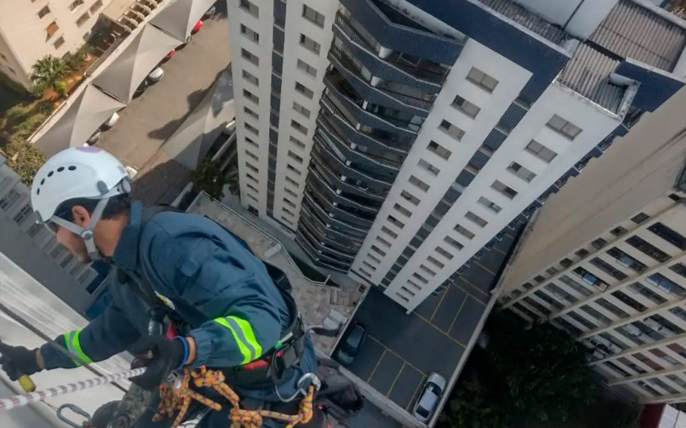
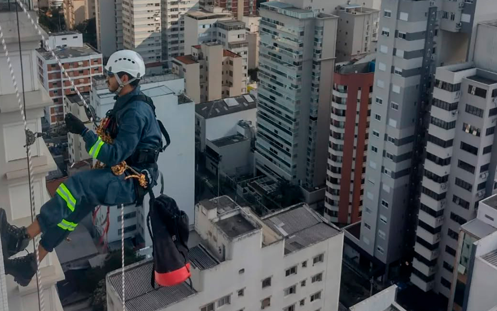

A Evolution Alpinismo Industrial oferece serviços especializados em manutenção de fachadas, garantindo segurança e eficiência em altura.
Especialistas em manutenção de fachadas com acesso por corda.

Na Evolution Alpinismo Industrial, oferecemos serviços completos de manutenção de fachadas em São Paulo que englobam limpeza profunda, reparos estruturais e revitalização de superfícies, utilizando técnicas avançadas de acesso por corda. Nosso método elimina a necessidade de andaimes, agilizando o processo e garantindo segurança máxima para sua equipe e para o edifício, seja ele um condomínio residencial ou um edifício comercial.
Realizamos avaliações detalhadas da integridade das fachadas e aplicamos soluções específicas para preservar a estética, a funcionalidade e a durabilidade das edificações. Com equipamentos modernos e profissionais altamente treinados e certificados, asseguramos que cada intervenção seja realizada com precisão, qualidade e em total conformidade com as normas de segurança.
Eliminamos sujeiras, poluentes e resíduos acumulados, preservando os materiais e a aparência da fachada, utilizando produtos específicos e técnicas que garantem a integridade da superfície.
Realizamos pequenos reparos que previnem a deterioração, corrigem danos e aumentam a durabilidade e a segurança da fachada, evitando problemas maiores no futuro.
Aplicamos técnicas que restauram e renovam a aparência da fachada, valorizando o imóvel e devolvendo o seu aspecto original ou um visual moderno e atraente.

Utilizando o alpinismo industrial, garantimos uma execução rápida e segura da manutenção de fachadas em São Paulo, sem os inconvenientes do uso de andaimes e com mínima interrupção das atividades no edifício. Nossas soluções oferecem excelente custo-benefício e contribuem para a longevidade e valorização do seu patrimônio.
Soluções seguras e inovadoras para serviços em altura.
Entre em ContatoEncontre respostas para as perguntas mais frequentes sobre nossos serviços de manutenção e limpeza de fachadas com alpinismo industrial.
Encontre respostas para as perguntas mais frequentes sobre nossos serviços de manutenção e limpeza de fachadas com alpinismo industrial.